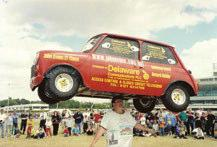

The tallest dog in the world is a Great Dane called Gibson. He is 107 centimetres tall.
The first couple to be shown in bed together on prime time television was Fred and Wilma Flintstone.
A duck’s quack doesn’t echo, and no one knows why.
The longest ever human chain was made between Tentulia and Teknaf in Bangladesh in 2004. It was 1,050 kilometres long and there were over 5 million people in it.
John Evans once balanced a Mini on his head for 33 seconds. It weighed 159.6 kilos.
Statues of famous people on horseback actually have a meaning to them. If the front legs of the horse are both in the air, it means that the person died in battle. If the horse has only one front leg in the air, the person died from wounds inflicted in battle. But if the four legs of the horse are all on the ground, it means the warrior died of natural causes.
The modern military salute came from the tradition of knights in armour raising their visors when they passed the king on horseback. This was done so that the king could identify each passing knight. So, nowadays, the right-handed salute harks back to the medieval warriors.
Researchers have found that, if a cat falls from the seventh floor of a building, its chances of surviving are much less than if it fell from higher up. If it fell from the twentieth floor, it would have 30% more chance of surviving. This is because apparently it takes the cat eight floors to realise what is happening to it and to correct its position. ✪